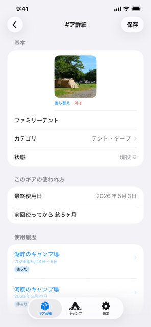
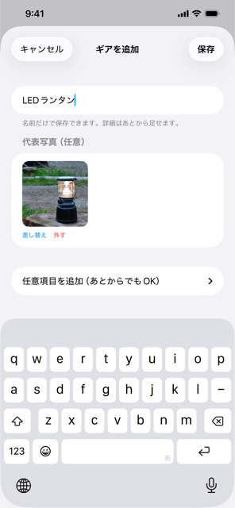
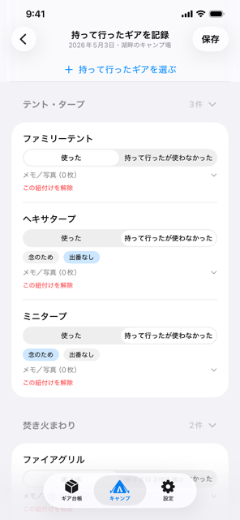
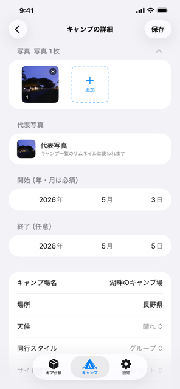

キャンプギアの管理と使い方の記録
愛用のキャンプギアに、使った場面を写真とメモで残せます。
持っているキャンプギアが、そのまま一覧になって手元に残ります。
キャンプごとに、持って行ったギアをチェックします。ギアの側から「どう使われてきたか」が見えてきます。
ギアの側から、どう使われてきたかが読める
ギアの詳細を開くと、そのギアがどのキャンプで、どう使われたかが時系列で並びます。最後に使ったのはいつか、前回から何ヶ月経っているかも分かります。
「持っている」ではなく「どう使われてきたか」が見えるようになります。
履歴の行をタップすると、そのキャンプの詳細に移動します。


ギア台帳
持っているキャンプギアが、そのまま一覧になって手元に残ります。写真1枚と自分用のメモ、買った日や値段も一緒に残せます。
ギアを追加するのに、必要なのは名前だけです。カテゴリ・メーカー・購入年月日・写真・メモは、あとから「ギア詳細」の「詳細」で足せます。
「使った」だけでなく
「持って行ったが使わなかった」も残せる
キャンプごとに、持って行ったギアをチェックします。そのうち使わなかったものは、ワンタップで落とせます。


キャンプそのものも記録できる
キャンプ場・場所・天候・気温・メモに加えて、同行スタイルとサイト種別も残せます。「ソロ」「ファミリー」「グループ」といった既定の項目だけでなく、自分の言葉に変えたり、増やしたりできます（例: 「林間サイト」）。
日付は「思い出せるところまで」でよく、年と月だけの登録にも対応しています。写真はキャンプ1件につき最大100枚まで。
整理も、自分の言葉で。
カテゴリで整理できる
ギア台帳は、自分で作ったカテゴリごとにまとまって表示されます。見出しをタップすれば開閉でき、件数もひと目で分かります。
ギアを手放したり壊れたりしたら、状態を変更します。削除ではなく状態の変更なので、それまでの使用履歴は残ります。一覧は「現役」「アーカイブ」「すべて」で絞り込めます。
カテゴリも、自分で作れる
「設定」の「マスタ編集」から、カテゴリを追加・名前変更・並び替え・削除できます。あらかじめ用意されたカテゴリはありません。
カテゴリを消しても、ギアや記録は消えません。そのギアが「未設定」に戻るだけです。
料金について
登録できるギアの点数に上限もありません。購入すると、貯めた記録を iCloud に保存し、機種変更や再インストールのあとでも記録を失いません。同期を使わなくても、記録は端末に保存されます。
データの扱い
記録はお使いの端末と、ご自身の iCloud にのみ保存されます。サーバーへ送信するデータはありません。
解析 SDK・広告 SDK も入れていません。
写真（ギア・キャンプ・使っている場面）は、アプリ内に複製せず、写真ライブラリの写真を参照します。アプリから写真を外しても、写真ライブラリの実体は残ります。